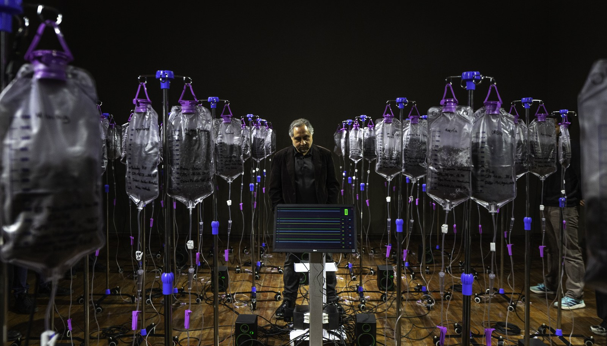
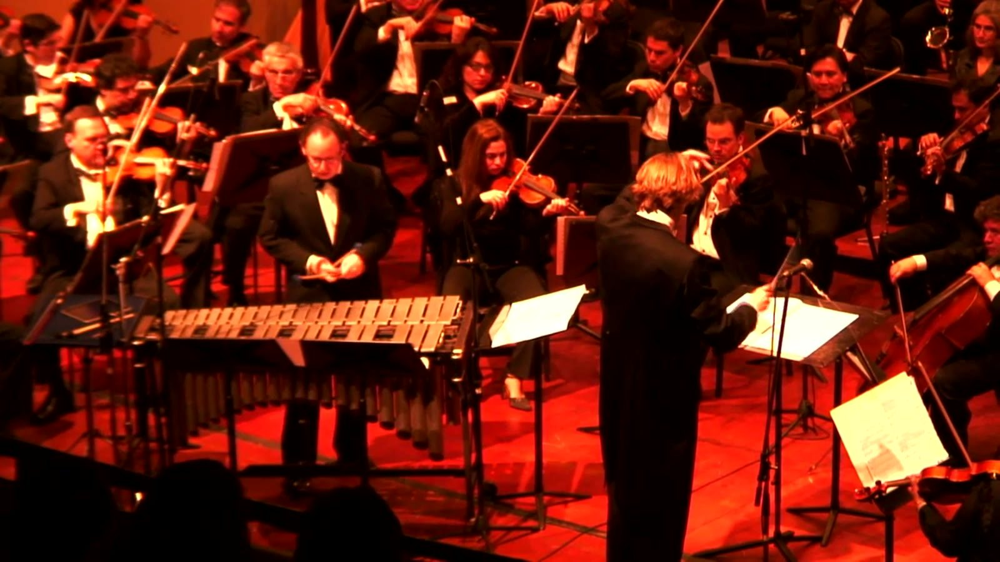
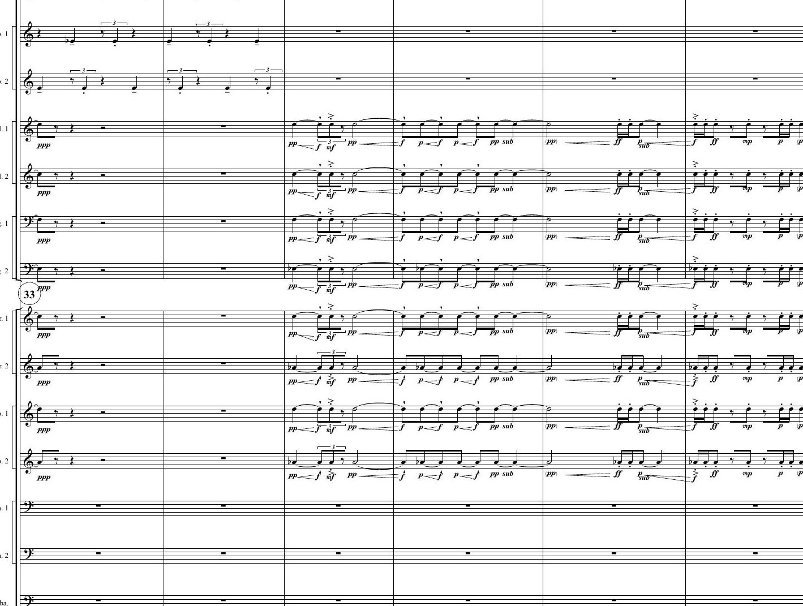
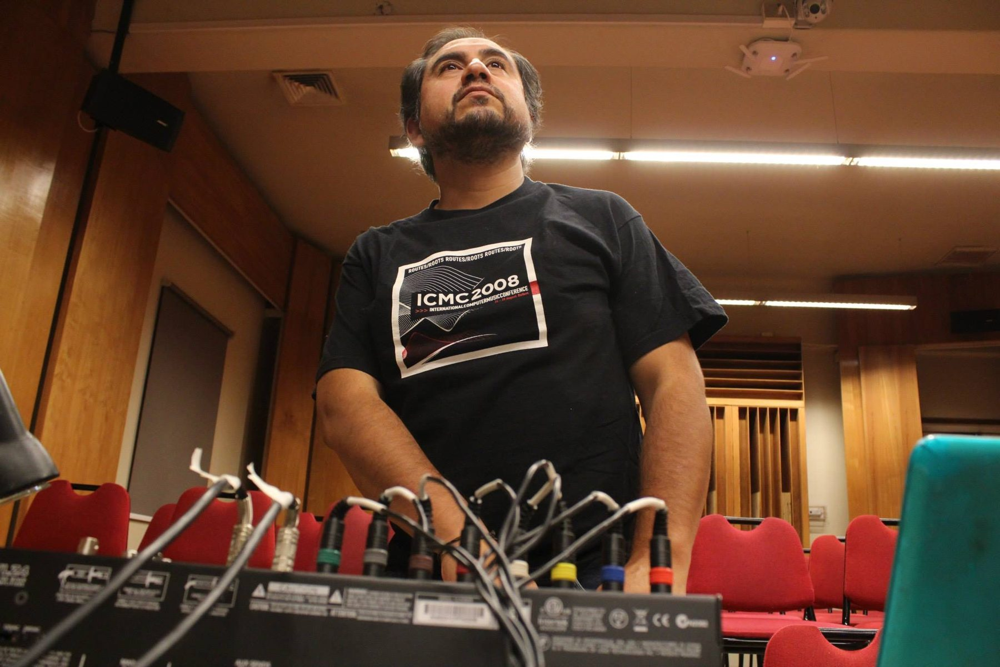
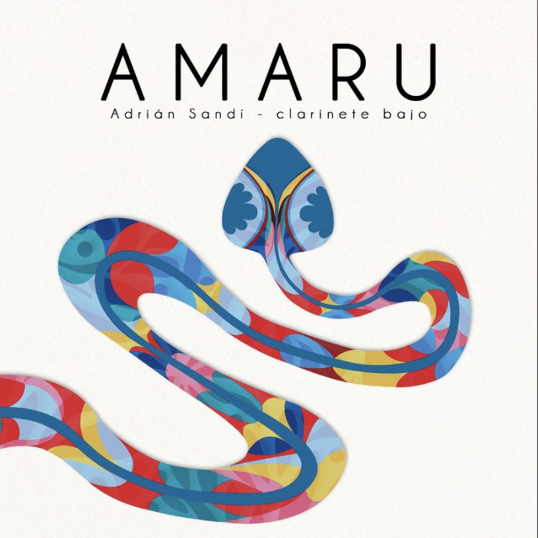
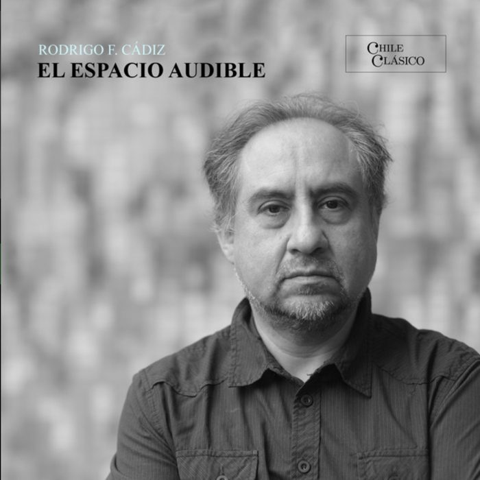
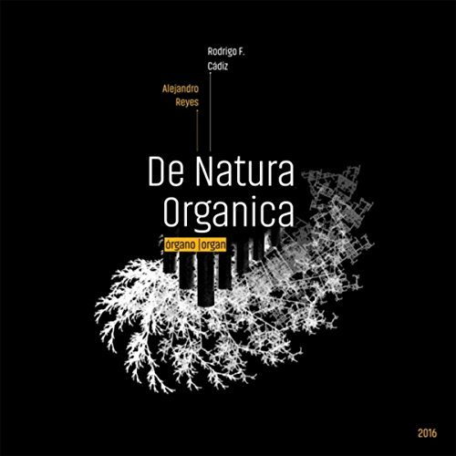
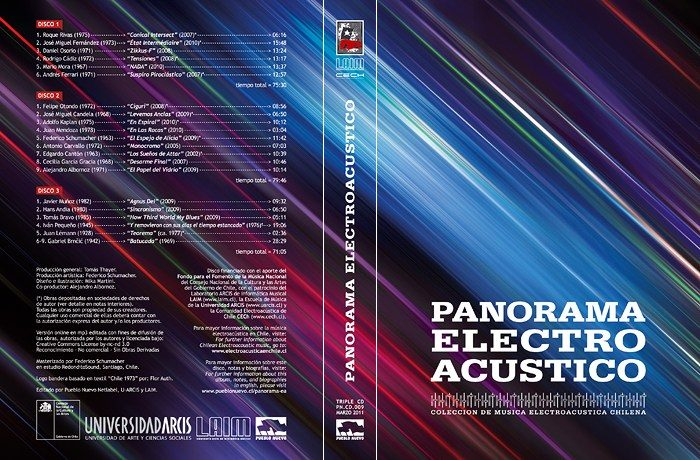
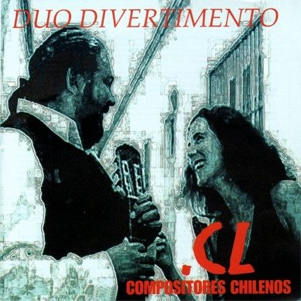
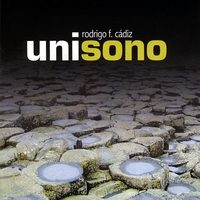

Rodrigo F. Cádiz
ComposerCompositor
Around seventy works · more than a hundred concerts in the Americas, Europe and AsiaAlrededor de setenta obras · más de cien conciertos en América, Europa y Asia
Rodrigo F. Cádiz
Around seventy works · more than a hundred concerts in the Americas, Europe and AsiaAlrededor de setenta obras · más de cien conciertos en América, Europa y Asia
Works for solo instruments, chamber ensembles, chorus, symphony orchestra, acousmatic music for loudspeaker orchestra, robot and laptop orchestras, new interfaces for musical expression, audiovisual media and installation. Scores distributed by BabelScores. Four solo albums and a DVD.
Obras para instrumentos solistas, conjuntos de cámara, coro, orquesta sinfónica, música acusmática para orquesta de altavoces, orquestas de robots y de laptops, nuevas interfaces para la expresión musical, medios audiovisuales e instalación. Partituras distribuidas por BabelScores. Cuatro discos propios y un DVD.
 2026
2026Percussion and live electronicsPercusión y electrónica en vivo · 10:00
Science & mathematicsCiencia y matemáticas 2025
2025Two pianos and ring modulatorsDos pianos y moduladores en Anillo · 25:00
Science & mathematicsCiencia y matemáticasBass clarinetClarinete bajo · 9:00
Science & mathematicsCiencia y matemáticas 2024
2024Clarinet, gametrak and electronicsClarinete, gametrak y electrónica · 10:00
Science & mathematicsCiencia y matemáticas
2022Multichannel sound sculpture installationInstalación escultórico sonora multicanal
Science & mathematicsCiencia y matemáticasArcontinuo, computer and videoArcontinuo, computador y video · 6:35
Science & mathematicsCiencia y matemáticas 2018
2018Arcontinuo and laptop orchestraArcontinuo y orquesta de Laptops · 10:01
Science & mathematicsCiencia y matemáticasAcousmatic music, 8 channelsMúsica computacional, 8 canales · 9:43
Science & mathematicsCiencia y matemáticas 2017
2017Flute, violin, violoncello, piano and vibraphoneFlauta, violín, violoncello, piano, vibráfono · 7:43
Science & mathematicsCiencia y matemáticas 2016
2016OrganOrgano · 1:10:04
Science & mathematicsCiencia y matemáticas
2010Percussion (vibraphone, iPad and triangle), computer and orchestraPercusión solista, orquesta y electrónica · 22:00

2003OrchestraOrquesta · 14:25
Science & mathematicsCiencia y matemáticas 2002
2002Tenor saxophoneSaxofón tenor · 5:57
Science & mathematicsCiencia y matemáticasWorks derived from mathematical, physical, chemical or biological modelsObras derivadas de modelos matemáticos, físicos, químicos o biológicos
16
The Arcontinuo, motion controllers, brain computer interfaces and augmented instrumentsEl Arcontinuo, controladores de movimiento, interfaces cerebro computador e instrumentos aumentados

16Multichannel works for loudspeaker orchestra, mostly eight channelsObras multicanal para orquesta de altavoces, en su mayoría de ocho canales
Symphony orchestra, string orchestra, concertos and orchestra with electronicsOrquesta sinfónica, orquesta de cuerdas, conciertos y orquesta con electrónica

Adrián SandíAdrián Sandí · 2026

Chile ClásicoChile Clásico · 2024

Chile Clásico · early instruments & electronicsChile Clásico · instrumentos antiguos y electrónica · 2024

for organ, with Alejandro Reyespara órgano, con Alejandro Reyes · 2016

triple CD · Pueblo NuevoCD triple · Pueblo Nuevo · 2011

recorder & guitar duodúo de flauta dulce y guitarra · 2009

solo & chamber electroacousticelectroacústica solista y de cámara · 2008
“He is distinguished by the diversity of formats in which he composes; his prolific output covers every area: symphonic, instrumental, electroacoustic, computer and mixed music … his curiosity and creativity know no limits.”
«Se caracteriza por la diversidad de formatos en los que compone y su prolífica obra abarca todas las áreas: música sinfónica, instrumental, electroacústica, computacional y mixta … su curiosidad y creatividad no conocen límites.»
Jury, UC Prize for Excellence in Artistic Creation, 2019Jurado, Premio a la Excelencia en la Creación Artística UC, 2019
AwardsPremios
Performed byInterpretada por
MISE-EN Ensemble · Schlagquartett Köln · Cuarteto Surkos · Taller de Música Contemporánea UC · Estudio MusicAntigua UC · Orquesta Sinfónica de Chile · Orquesta Sinfónica Nacional Juvenil · Orquesta Marga Marga · Orquesta de Cámara de Chile · Orquesta Sinfónica de La Serena · Stanford Laptop Orchestra · Logos Foundation Man & Machine Robot OrchestraMISE-EN Ensemble · Schlagquartett Köln · Cuarteto Surkos · Taller de Música Contemporánea UC · Estudio MusicAntigua UC · Orquesta Sinfónica de Chile · Orquesta Sinfónica Nacional Juvenil · Orquesta Marga Marga · Orquesta de Cámara de Chile · Orquesta Sinfónica de La Serena · Stanford Laptop Orchestra · Logos Foundation Man & Machine Robot Orchestra
FestivalsFestivales
International Computer Music Conference · Festival Ai-maako · MoxSonic · Electronic Music Midwest · New York City Electroacoustic Music Festival · MA/IN · Sound Image · Sonorities Festival · Bourges · Musica Viva · IRCAM Forum · SEAMUS · Ecos Urbanos · MISE-ENInternational Computer Music Conference · Festival Ai-maako · MoxSonic · Electronic Music Midwest · New York City Electroacoustic Music Festival · MA/IN · Sound Image · Sonorities Festival · Bourges · Musica Viva · Forum IRCAM · SEAMUS · Ecos Urbanos · MISE-EN